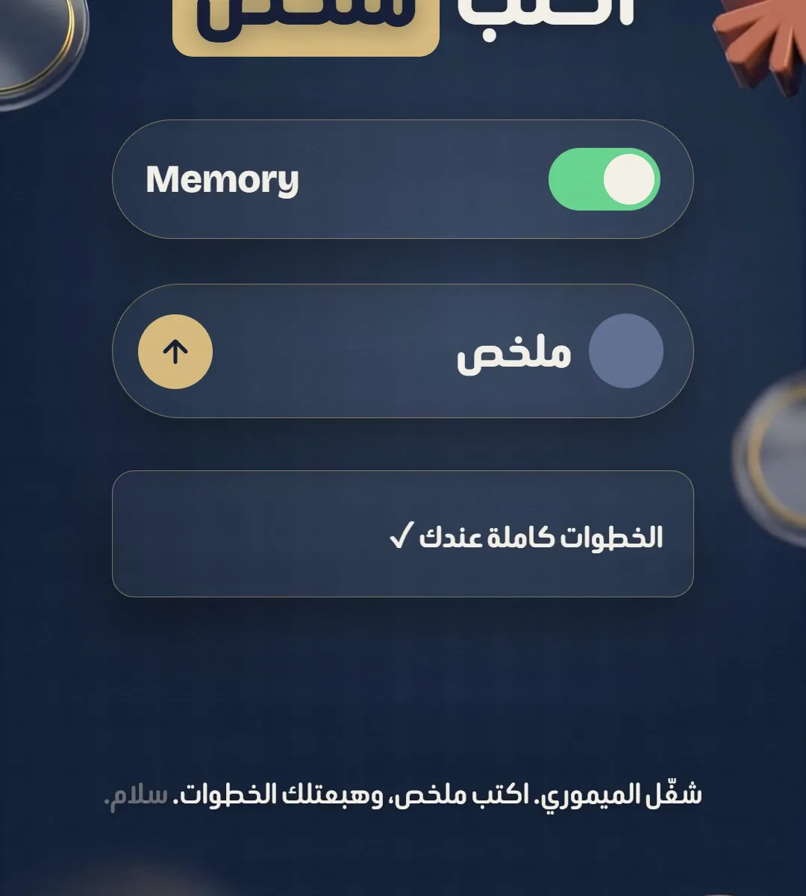
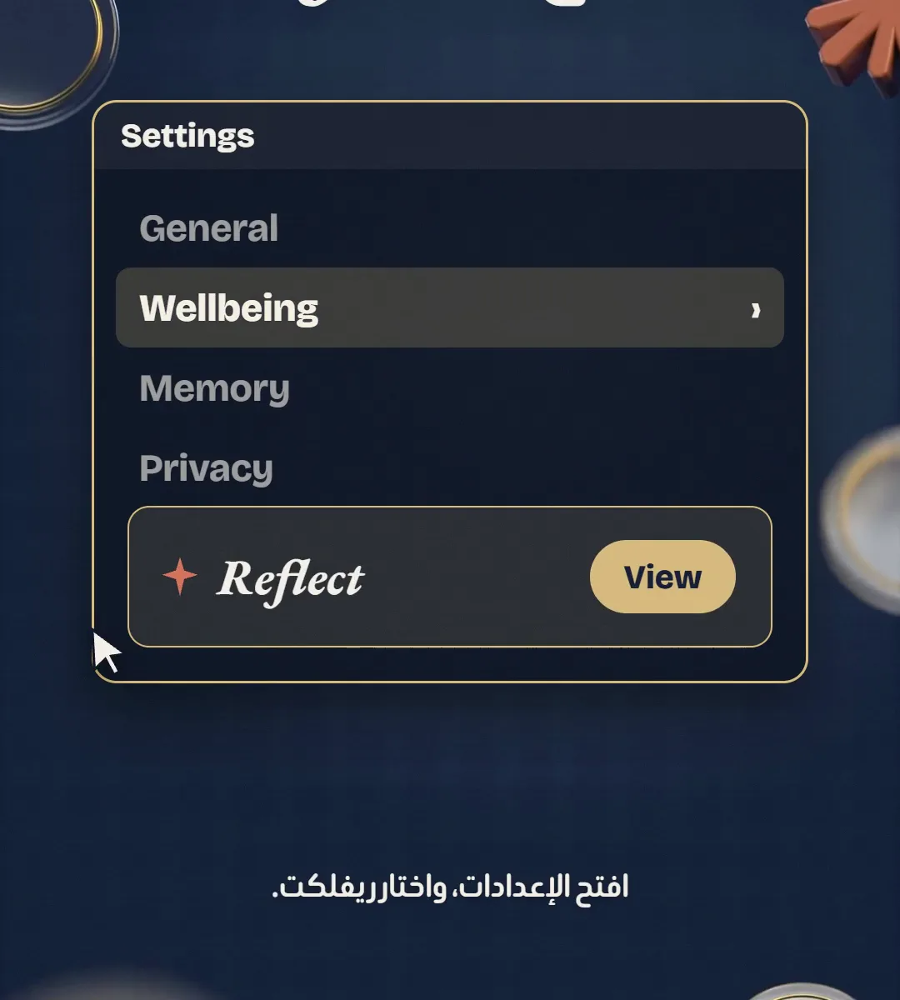
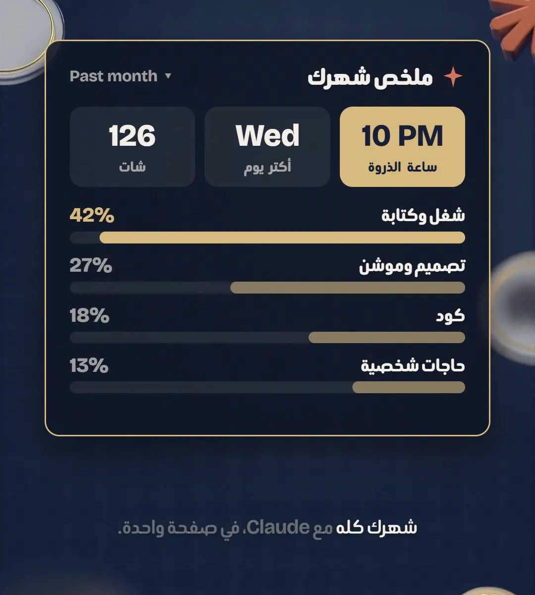
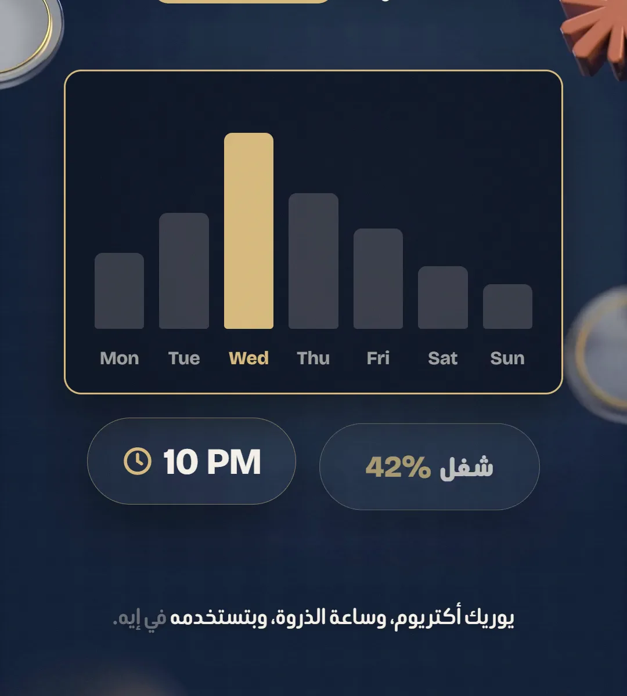
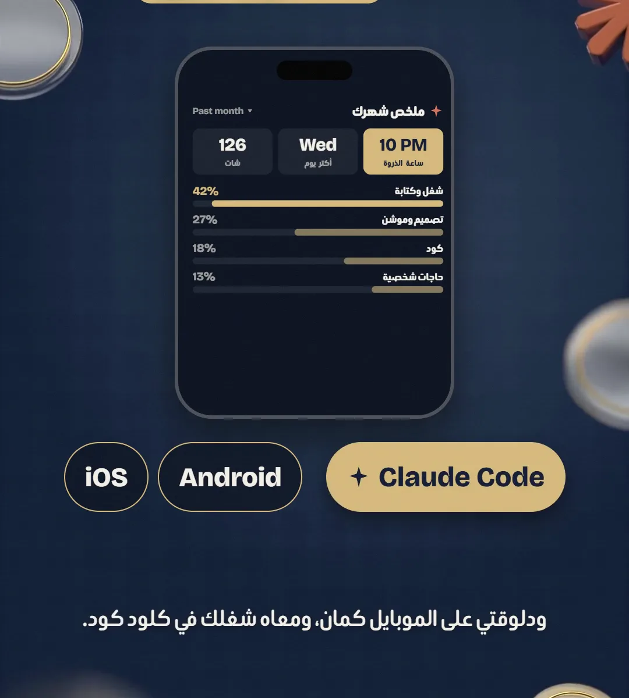

شهرك كلــه مع Claude فيصفحـــة
من 24 نوفمبر 2026 ملخص الشهر (Reflect) خرج من التجريبي: صفحة بتوريك إمتى وإزاي وفي إيه استخدمت Claude. متاح لباقات Free وPro وMax وUltra على الويب وClaude Desktop وآيفون وأندرويد (مش متاح لـ Team وEnterprise)، ولسه بينزل تدريجي.


- 01
الأول: شغّل الميموري
الملخص بيعتمد على نفس سجل الشاتات اللي بيشغّل الميموري، فلو «Generate memory from chats» مقفول الملخص مش هيظهر. افتحه من Settings ← Your Claude (أو Settings ← Memory في الشكل القديم للإعدادات).
ملاحظات الإصدار الرسمية (24 نوفمبر) ↗
من الريل: الميموري لازم تكون شغالة - 02
افتح Reflect
على الويب أو Claude Desktop: Settings ← Wellbeing، وبعدين View تحت Reflect (في الشكل القديم: Settings ← Reflect). على الموبايل: زرار القايمة فوق على الشمال ← صورتك تحت ← Settings ← Reflect. الآيفون محتاج iOS 26 أو أحدث.
شرح Anthropic: See your monthly recap ↗
من الريل: Settings ← Wellbeing ← Reflect ← View - 03
اقرا ملخصك
هتلاقي ملخص قصير لمواضيع شهرك، أكتر يوم شغلت فيه، ساعة الذروة، عدد الشاتات، ورسم لنشاطك كل يوم، ونسبة كل موضوع استخدمت فيه Claude. الأرقام اللي في الريل مثال بس.

من الريل: شكل الملخص (أرقام مثال) - 04
إمتى وأكتر يوم
رسم الأيام بيوريك اليوم اللي بتشتغل فيه أكتر، والساعة اللي بتفتح فيه Claude أكتر. من نفس الصفحة تقدر تحط ساعات هدوء وتذكير بالراحة من Settings ← Wellbeing. وتقدر تغيّر الفترة من «Past month» لـ 3 شهور أو 6 أو سنة.

من الريل: أكتر يوم وساعة الذروة - 05
الجديد: الموبايل وكلود كود
من 24 نوفمبر الملخص بقى على آيفون وأندرويد، وبقى بيحسب شغلك في Claude Code وCowork اللي شغال على الكلاود بس (الحاجات اللي شغالة على جهازك مش بتدخل). لو عندك ملخص اتعمل قبل 24 نوفمبر، اعمله Refresh عشان يدخل فيه الشغل ده.

من الريل: الملخص على الموبايل ومعاه Claude Code - 06
خصوصيتك والليمت
الفرجة على الملخص مش بتاكل من الليمت بتاعك (بس أي شات تبدأه منه بيتحسب عادي). ولو عايز تمسحه: آخر الصفحة ← Delete stored reflections ← Delete، وده بيمسح الملخصات بس مش شاتاتك، ومينفعش يترجع.
عايز حاجة زي دي لبراندك؟ خدماتنا ↗
عايز حد يعملهولك؟
مش فاضي تتعلم وتعمل بنفسك؟ أنا بعمل ريلز لبراندك بنفس الطريقة اللي بشرحها هنا.